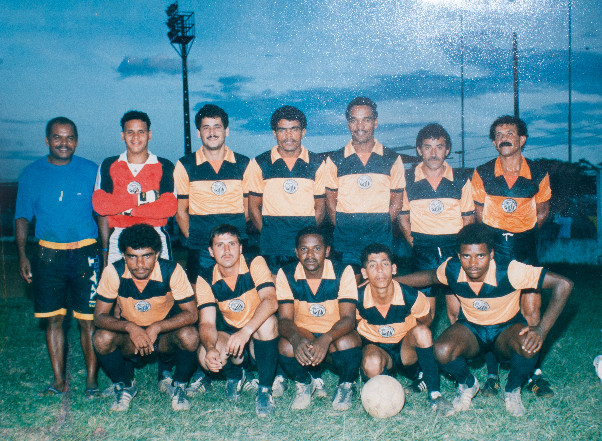

ARRETADO
Chegar e fazer morada
Arretado parte da experiência da migração nordestina para São Paulo. Mais do que contar uma história de deslocamento, a coleção busca mostrar como memórias, vínculos e práticas viajam, se transformam e ajudam a construir pertencimento em outro lugar.
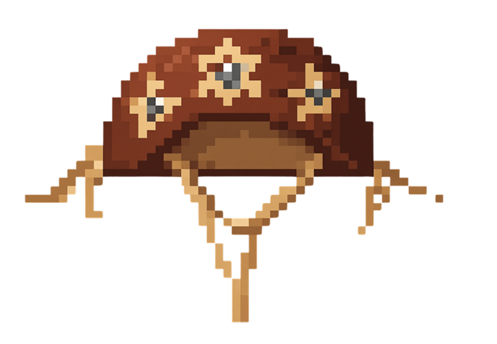
O nome une duas forças do recorte: “arretado”, expressão nordestina que carrega intensidade, coragem e autenticidade, e a ideia de quem chega, enfrenta e constrói. A coleção não busca folclorizar o Nordeste nem reduzir a cultura migrante a símbolos prontos — ela quer mostrar a chegada como início de uma construção: chegar e fazer morada.
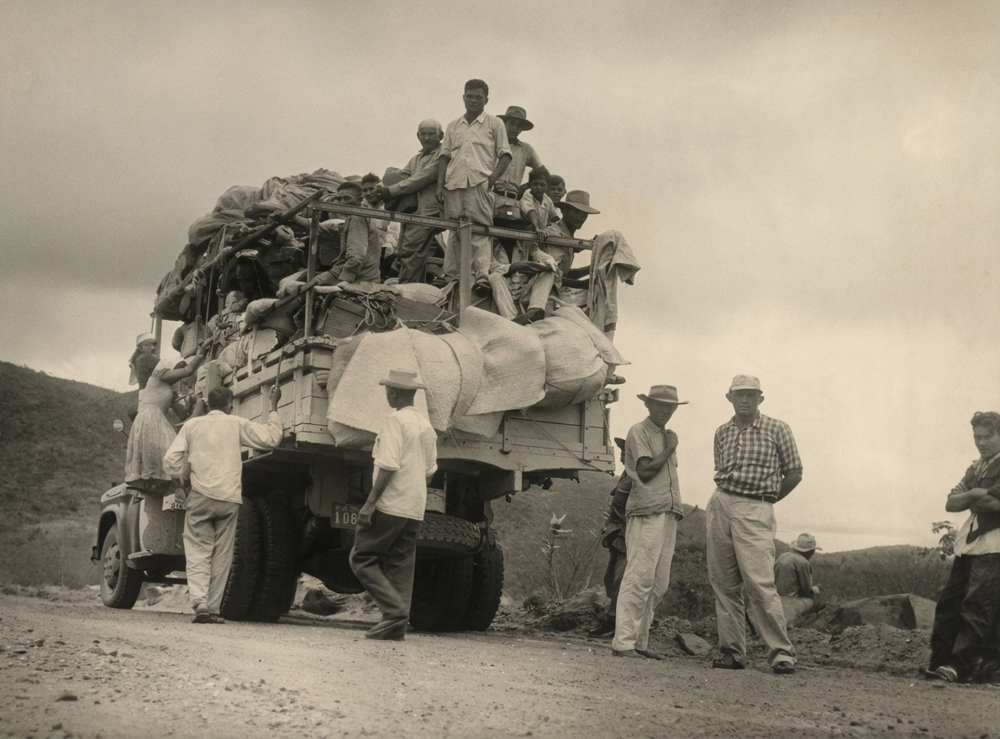
Trouxeram em sua bagagem costumes, valores e história
Migrantes nordestinos embarcam no veículo "Pau de Arara", 1958. Autoria Desconhecida
HISTÓRIA
Um trajeto de esperança
A migração nordestina ganhou força a partir dos anos 1940 e se intensificou no pós-guerra, impulsionada pela industrialização e pela demanda por mão de obra em São Paulo. Mas os migrantes não vieram apenas para trabalhar:
ocuparam espaços, criaram oportunidades e construíram lugares de pertencimento.
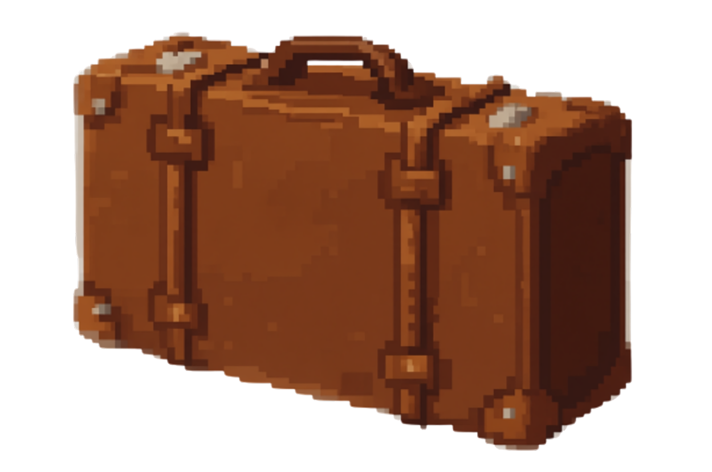
O momento narrativo central é a chegada à capital, após a viagem de trem ou ônibus, com a mala como principal objeto de memória — roupas, fotos, tecidos, documentos e alimentos da terra. A Hospedaria dos Imigrantes, no Brás, registrou em 1952 o pico de nordestinos: 204.214 pessoas em um único ano. Com o tempo, muitos passaram a ir direto para casas de parentes e conterrâneos, formando redes que transformaram a chegada em um efeito de coletividade.
Nas várzeas e periferias, parentes, igrejas, bares, times de futebol, feiras e mutirões transformaram áreas precárias em bairros vivos. A cultura se preservou justamente porque pôde se transformar: o forró, as festas juninas, as cozinhas e as casas autoconstruídas carregam memórias que continuam sendo recriadas no cotidiano paulistano.
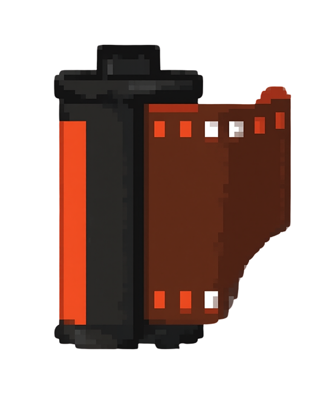
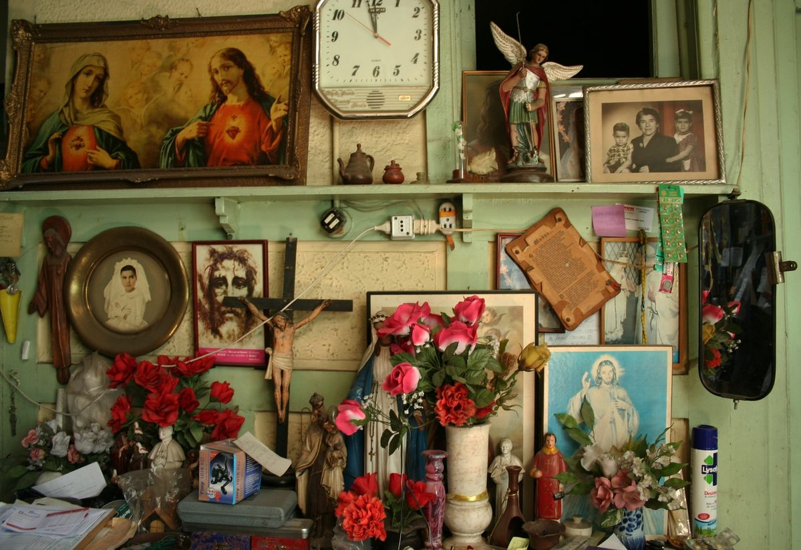
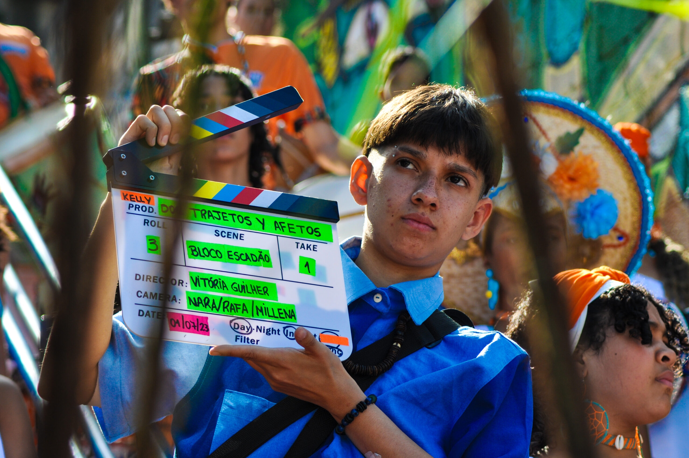
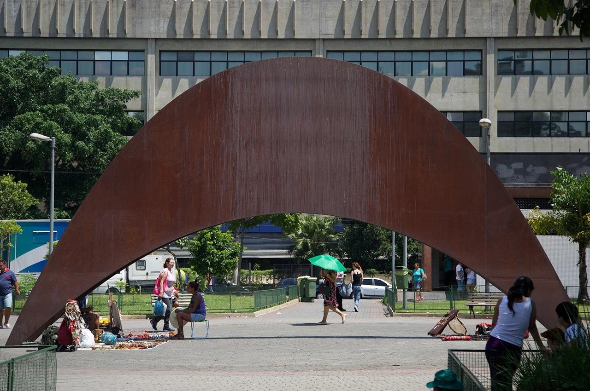
ELEMENTOS
Festividades, eventos, sociabilidade
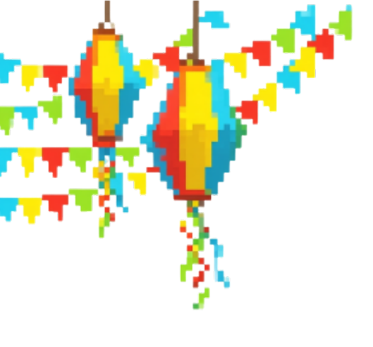
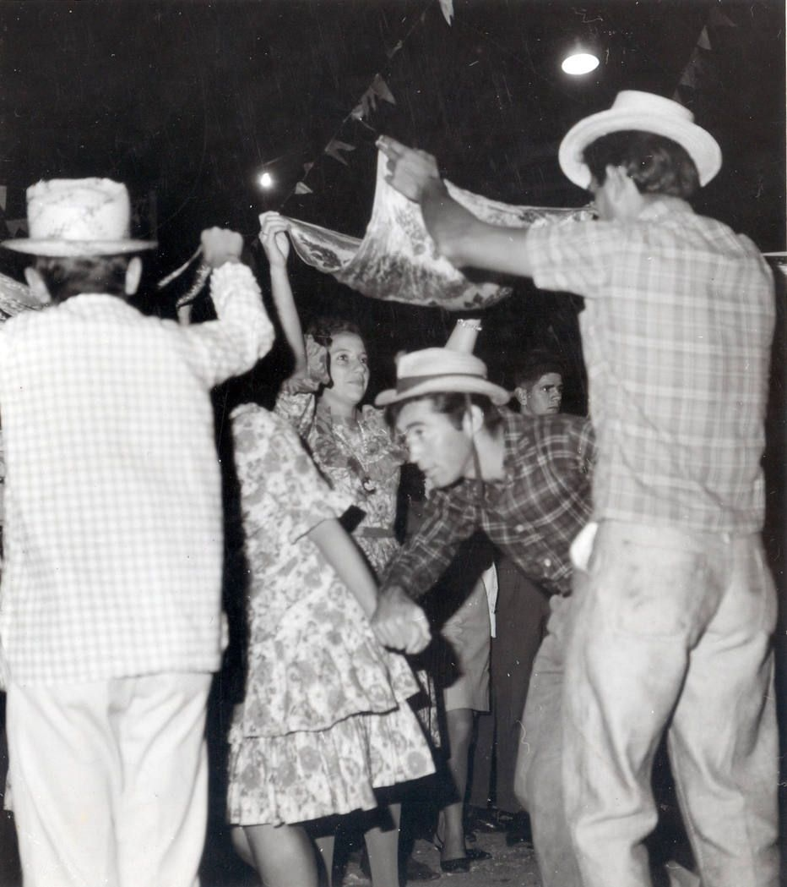
FESTA JUNINA
Festa junina, quadrilhas, fogueiras, bandeirinhas, forró, comidas típicas e vestimentas foram aplicadas ao território urbano.
Festa Junina da Associação Feminina dos Funcionários Públicos, 1965. Acervo Estadão
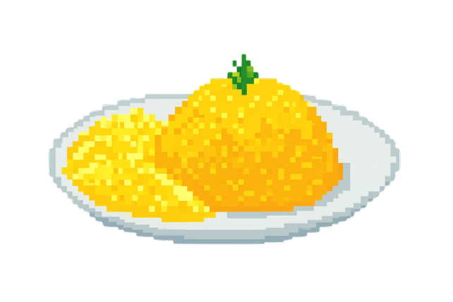
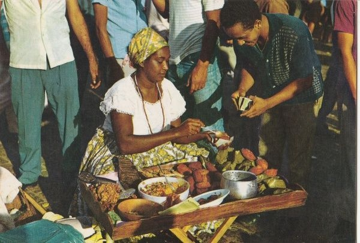
CULINÁRIA
O povo nordestino trouxe sua rica culinária: cuscuz, tapioca, carne de sol, feijão verde, baião de dois e acarajé se tornaram presentes em casas, feiras e restaurantes.
Baiana do Acarajé, 1970. Coleção Genésio Pitanga
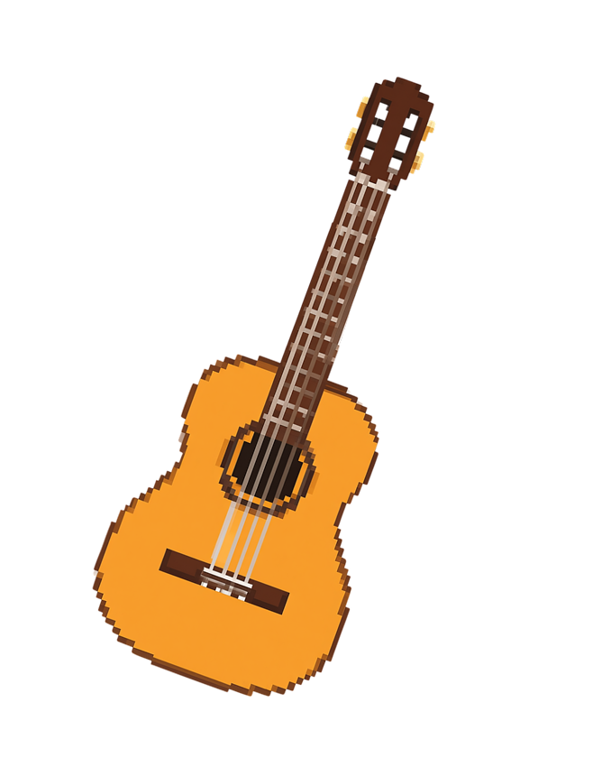
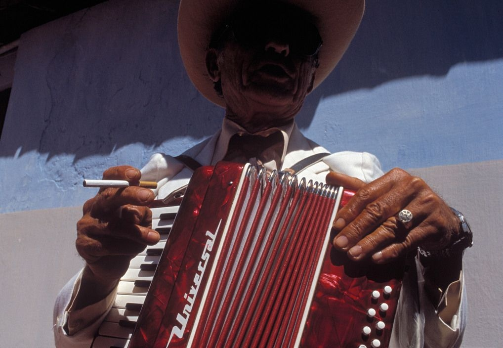
MÚSICA E
ORALIDADE
O forró, baião, repente, cordel, provérbios e sotaques que atravessam gerações.
Músico e sua sanfona, 1989. Miguel Rio Branco
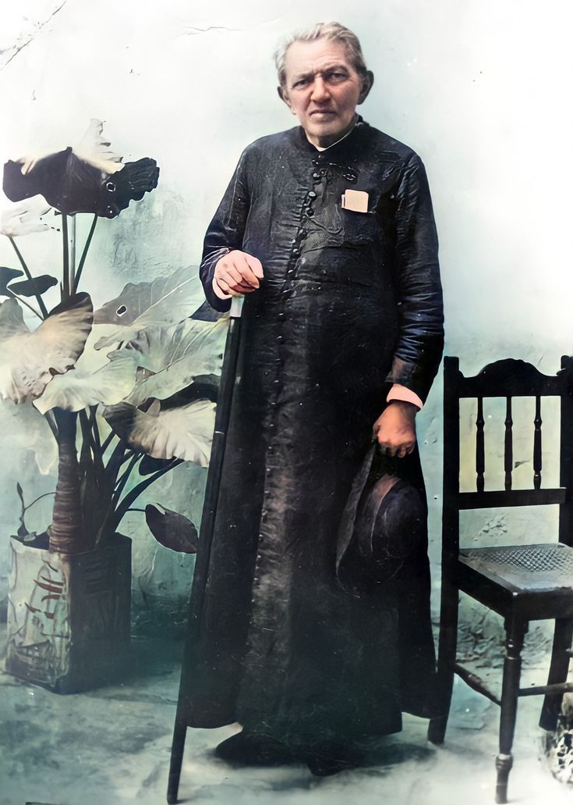
FÉ E DEVOÇÃO
Novenas, romarias e celebrações de santos como espaços de encontro e pertencimento.
Padre Cícero, 1920. Autoria desconhecida.